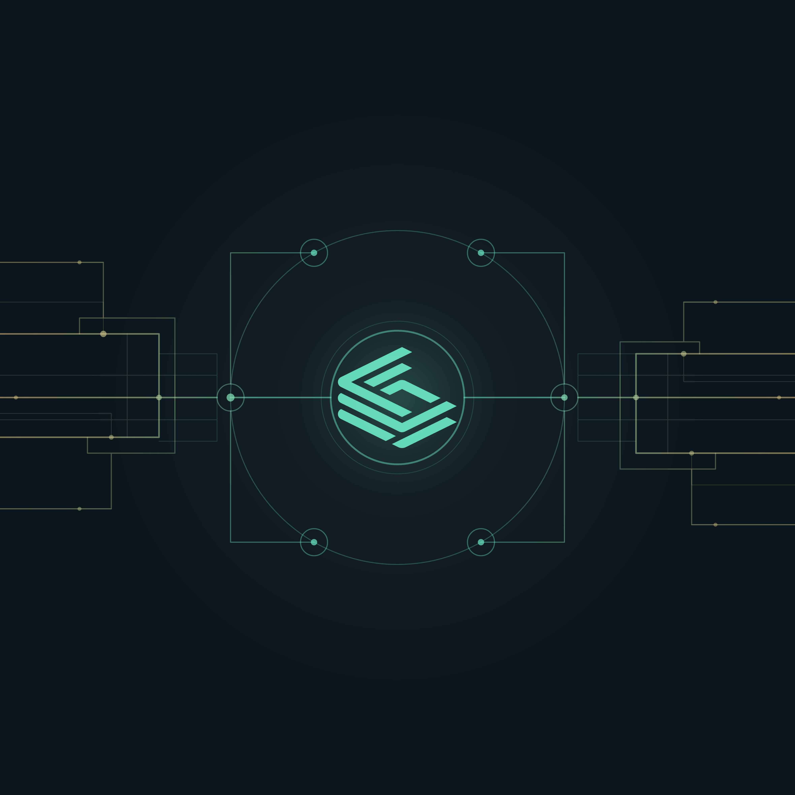

LUCI internal team assets
The standard set. Every asset carries the orchestration landscape motif — the LUCI hub as the power source, connective tissue under its control, mint-gold wave gradient throughout. The logo stays primary in every image.
Desktop wallpaper · 1920×1080 (2560×1440 also rendered)
Hub right-of-center behind the tagline; tissue runs off both edges. Logo + tagline anchored left, full logo bottom-left. The house motif as a calm, controlled field.

Teams / Zoom background · 1920×1080 (center kept clear for the person on camera)
Hub centered behind the subject (the person appears inside the orchestrated system); tissue runs off both edges. Logo + tagline bottom-right.

LinkedIn personal-profile team banner · 1584×396 (@1x + @2x)
Hub anchors the right third; tissue flows left across the banner behind the lockup. Logo + taglines seated upper-left so they clear the profile photo/name (bottom-left). "Orchestration Engine" in gold, matching the live site + company cover.

High-res motif master · 4000×4000 (download for materials)
The motif on its own, no lockup. Use as a background texture in decks, one-pagers, or any material that needs the orchestration story. Vector master (.svg) scales freely; 4000px PNG for raster contexts.

A/B/C wallpaper + Teams variants are superseded by the D set. Say the word and I'll archive them.